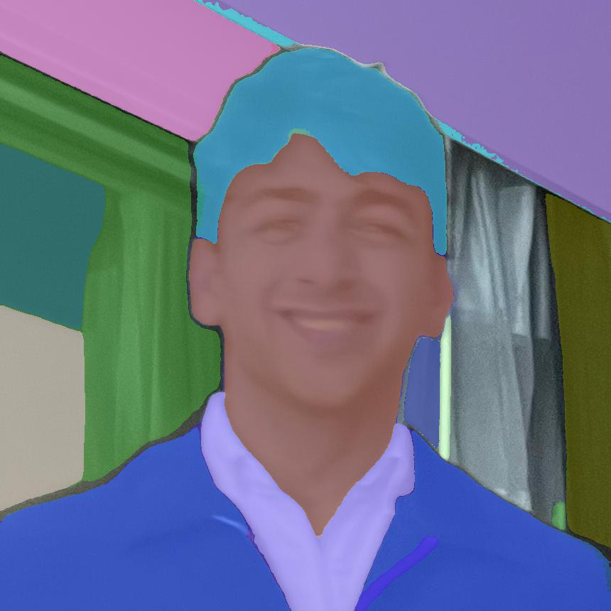
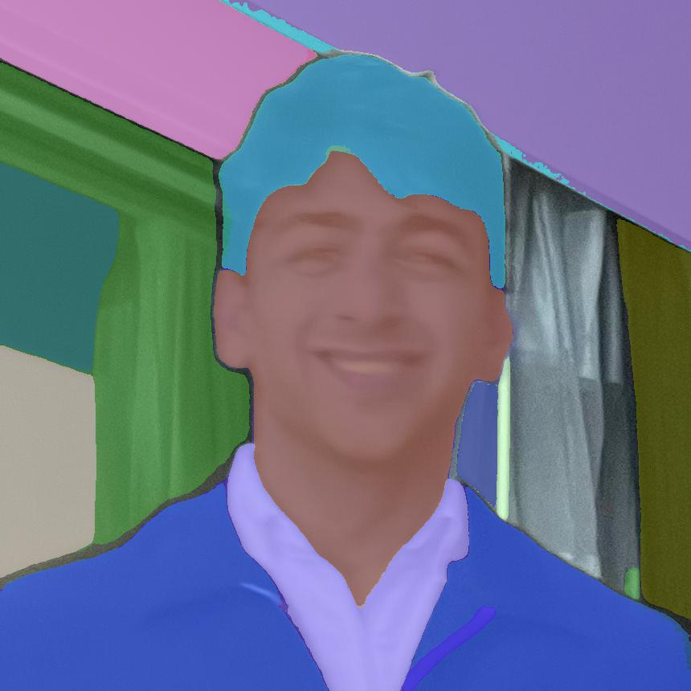
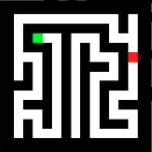
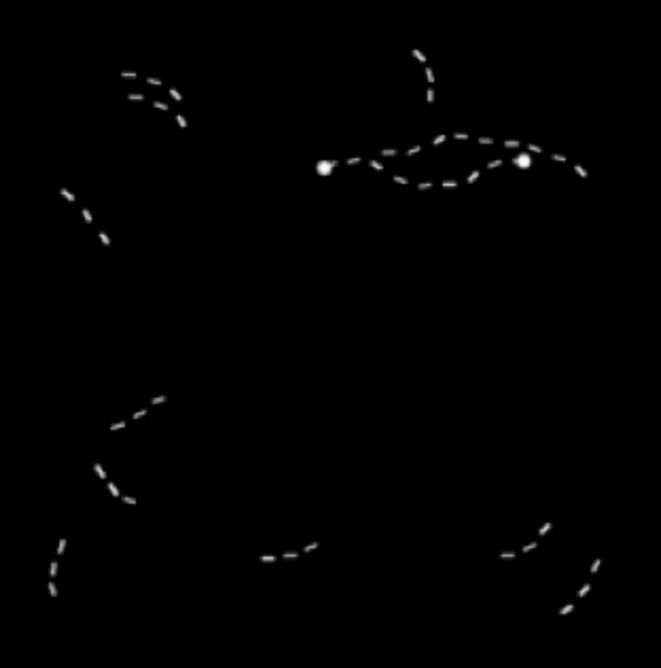
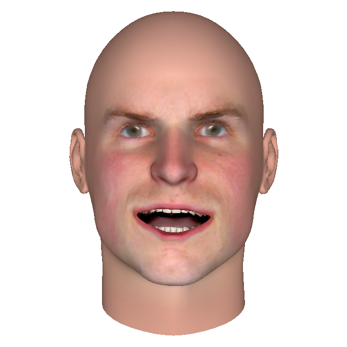
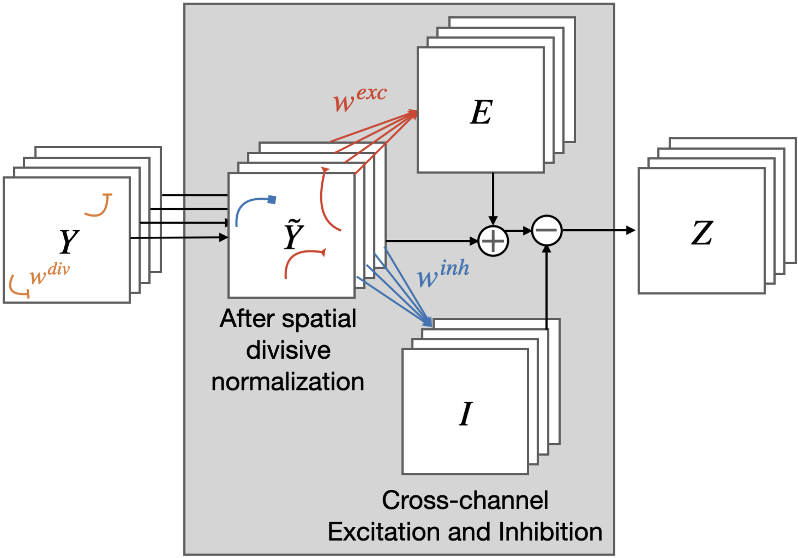

Hello! 👋 I'm Ritik, a first-year PhD student (2023 - 2027 expected) supervised by
Dr. Gregory Zelinsky at
Stony Brook University starting Fall 2023.
My research interests are in the intersection between computer vision, neuroscience, and representational learning. My research explores the utilization of top-down connections as a means to build stable, robust representations that engage with behaviorally-relevant visual content.
I graduated from UC San Diego with a BS in cognitive science with a specialization in machine learning and neural computation. I was fortunate to work at the de Sa Lab and be advised by Dr. Virginia R. de Sa.
Contact: ritik.raina@stonybrook.edu
I am always open to collaborating on a project! Should you wish to discuss my current research or entertain new research avenues, I invite you to schedule a call with me.
 

Recent News
- New! September 2023: Paper accepted at NeurIPS 2023!
- August 2023: Excited to start my PhD journey at Stony Brook University.
- March 2023: Article accepted at Journal of Vision 2023!
- December 2022: Paper accepted at NeurIPS SyntheticData4ML Workshop 2022!
- June 2022: Joined the de Sa Lab as a Pre-Doctoral Researcher.
- June 2022: Graduated from UC San Diego with a B.S. in Cognitive Science and minor in Computer Science!
- January 2022: Accepted as a Student Researcher at Intel Corporation.
- December 2021: Paper accepted at NeurIPS SVRHM Workshop 2021!
- January 2021: Joined the de Sa Lab as a Research Assistant working with Virginia de Sa and Vijay Veerabadran.
- July 2020: Accepted as an Undergraduate Researcher - Machine Learning at IBM Research in collaboration with Center for Microbiome Innovation.
Research
-


Adaptive recurrent vision performs zero-shot computation scaling to unseen difficulty levels
NeurIPSProceedings of the Conference on Neural Information Processing Systems, 2023
We show that deep convolutional networks with intermediate recurrent blocks (ConvRNNs operating on image features) can be combined with an adaptive computation technique to learn to dynamically process different input examples based on a per-instance difficulty level.
-

Cortically motivated recurrence enables task extrapolation
COSYNEComputational and Systems Neuroscience, 2023
We contribute a recurrent module we call LocRNN that is designed based on a prior computational model of local recurrent intracortical connections in primates to support such dynamic task extrapolation.
-


Exploring Biases in Facial Expression Analysis using Synthetic Faces
NeurIPSWorkshop on Synthetic Data for Empowering ML Research (SyntheticData4ML), 2022
This work uses artificially created faces where facial expression can be carefully manipulated and matched across artificial faces with different skin colors and different facial shapes. We show that several public facial expression models appear to have racial biases.
-


Bio-inspired learnable divisive normalization for ANNs
NeurIPSWorkshop on Shared Visual Representations in Human & Machine Intelligence (SVRHM), 2021
We introduce DivNormEI, a novel bio-inspired convolutional network that performs divisive normalization, a canonical cortical computation, along with lateral inhibition and excitation.